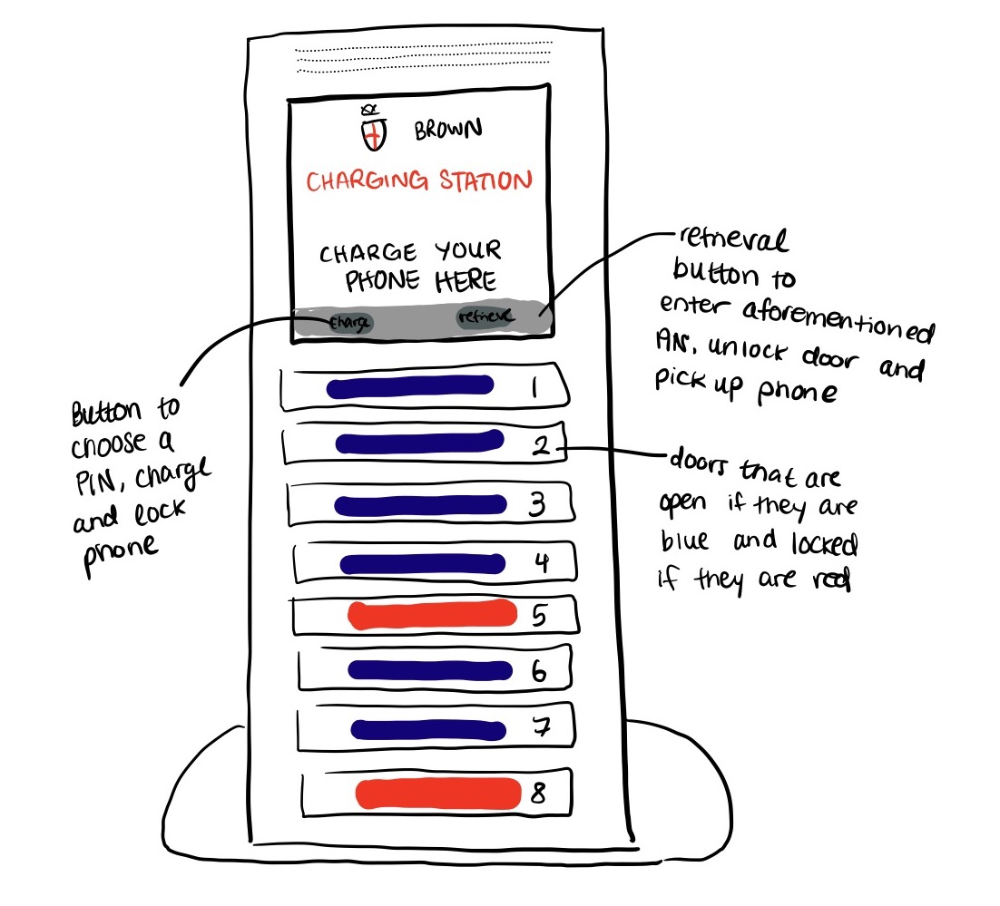
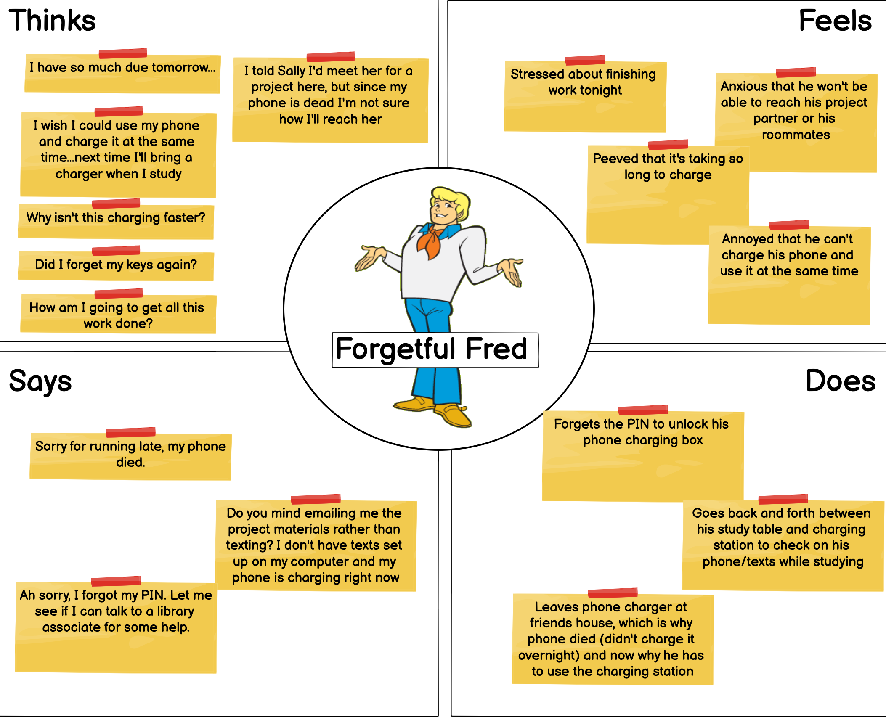
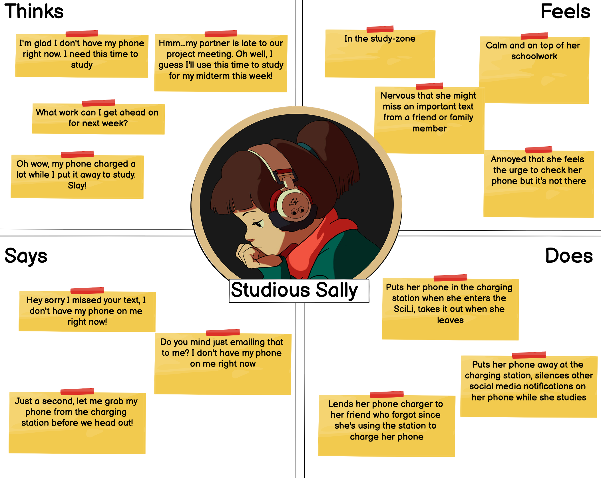

Developing a persona and storyboard based on observing and interviewing SciLi charging station users
what is this?
In this classic UIUX task, I tried to imagine what kind of person would need to use the SciLi’s charging station. I first observed and interviewed several people using the station to understand the problems they were facing and why they opted to use the device. I then created two different personas, illustrated through empathy maps, and concluded with a storyboard charting a user’s journey with the device.
why is it important?
Being able to understand the user demographics of any device is crucial to understanding certain design choices. This assignment helped me practice how to synthesize users trends to understand how different types of people use a certain device. It certainly surprised me how different people used the charging device in ways I never would have expected, like to prevent them from getting distracted while studying.
a bit of context
Charging stations such as these allow up to eight people to charge their phones, either Apple or Android – in a locked container. The charging stations are locked using a four-digit pin of the user’s choosing, and are unlocked by inputting the same pin. Blue lights denote available charging boxes, while red lights indicate the box is in use. These charging stations are in a library that is open all the time, which means that all students will always have access to a charger in case their phone dies and they have no way to communicate. This charger is located in the SciLi basement, which is open at all times, unlike some floors of the library.

who are our users?
real-time user observations
People spent max 1-2 minutes at the station, and the time spent lingering was usually on the “retreive phone” page where it asks the user to input their pin to unlock the box with their phone.
When people chose a box for their phone, they almost always chose the first available box highest from the ground. In other words, the red boxes were clustered at the top while the blue, available boxes were toward the bottom.
Within an hour-long window, most few people did not retrieve their phone, indicating people spent a long time with their phones away and charged.
interview questions
1) Why are you using this charging station?
2) How often do you charge your phone here?
3) Do you come here out of necessity or because you want to?
4) When do you most often use this charging station?
5) How long do you charge your phone for?
6) Do you make decisions on where to study based on the availability of charging stations?
key takeaways from interviewing and observing users
1) A few people used the device to mitigate distraction; they said they used the charging station to both charge their phone and keep it out of sight while they studied
2) For a few users, the station is not a necessity for them but a way to prevent distraction
3) For others, they used the station out of pure necessity; some had come to the SciLi explicitly to use the station
4) Was more common to find people use the station because their phone died rather than a way to keep their phone away
5) Most users had used the device before; seems to have repeated use from people regardless how they use it
now, let's use our observations to imagine two personas.
meet forgetful fred
Truthfully, we are all forgetful Fred sometimes. Forgetful fred is a mix of traits, namely that he tends to forget to charge his phone at night and leaves his spare charger with friends. He uses the charging station when his phone is out of battery and he has no way other way of contacting others. He tends to come to the charging station not by choice, but out of necessity. He will stay to use the charging station until his phone charges and leave, unlike other users who will stay in the SciLi and study while using the interface.

meet studious sally
Studious Sally is as put together as we wish we could all be. She uses the charging station to help her buckle down and grind during her SciLi study sessions, not because her phone is necessarily out of battery. Sometimes, she gets nervous that she's going to miss important messages because her phone is out of reach, but she knows that she'll be able to reach out to people when she periodically checks her phone out of the charging station just to keep updated.

creating a storyboard
follow forgetful fred's journey
Just one of the times Forgetful Fred stopped by the SciLi to use the charging station.